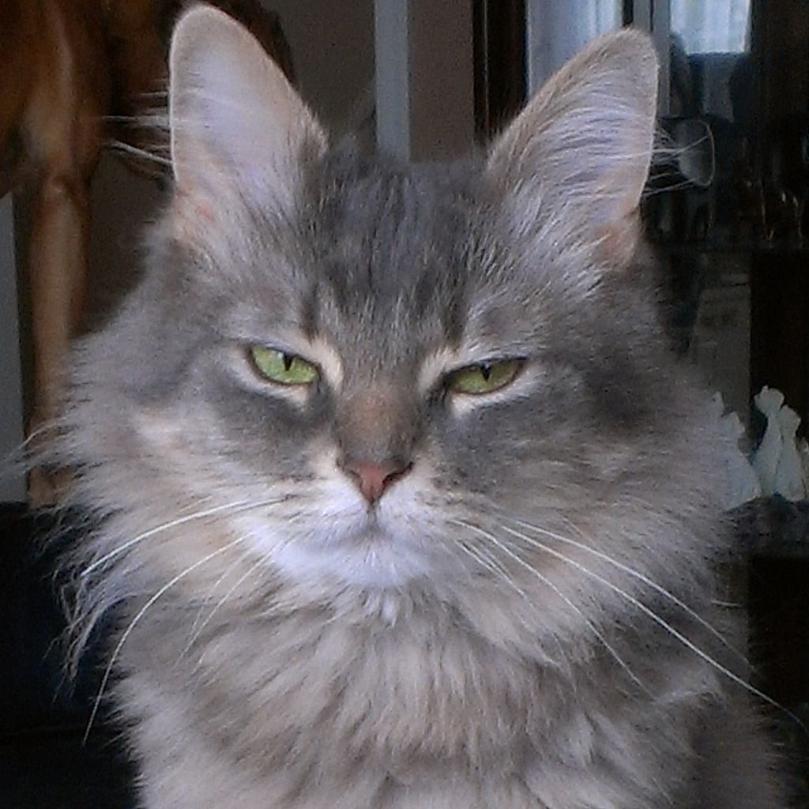

A domestic long-haired cat is a cat of mixed ancestry – thus not belonging to any particular recognised cat breed – possessing a coat of semi-long to long fur.[1] Domestic long-haired cats should not be confused with the British Longhair, American Longhair, or other breeds with "Longhair" names, which are standardized breeds defined by various registries. Domestic long-haireds are the second most popular cat in the United States after the domestic short-haired;[1] one in ten of the ninety million cats in the US is a domestic long-hair.[1][2] Other generic terms are long-haired house cat and, in British English, long-haired moggie.
In the cat fancy, and among veterinarians and animal control agencies, domestic long-haired cats may be classified with organisation-specific terminology (often capitalized), such as Domestic Longhair (DLH),[1] House Cat, Longhair (HCL),[3][4] or Semi-Longhair Household Pet.[5] Such a pseudo-breed is used for registry and shelter/rescue classification purposes. While not bred as show cats, some mixed-breed cats are actually pedigreed and entered into cat shows that have non-purebred "Household Pet" divisions. Show rules vary, and may permit "any eye colour, all coat colours and patterns, any coat length or texture, and any length of tail"[4] (i.e., anything at all, as long as the cat is well-proportioned and healthy) or may be more restrictive, e.g.: "The colours chocolate and cinnamon, as well as their dilution (lilac and fawn) are not recognized in any combinations...[and t]he pointed pattern is also not recognized".[5]
This domestic long-haired cat appears to be of partial Persian ancestry, with a relatively flat nose and fine hair.
Domestic long-haireds come in all genetically possible cat colours including tabby, tortoiseshell, bi-coloured, and smoke.[1] Domestic long-haireds can have fur that is up to six inches long.[1] They can also have a mane similar to a Maine Coon's, as well as toe tufts and ear tufts.[1] Some long-haired cats are not able to maintain their own coat, which must be frequently groomed by a human or may be prone to matting.[1] Because of their wide gene pool, domestic long-haireds are not predisposed to any genetically inherited problems.[1]
References:
This article uses material from the Wikipedia article ”Domestic long-haired cat", which is released under the Creative Commons Attribution-Share-Alike License 3.0
Picture: By MiscGezork (Own work) [CC BY-SA 3.0], via Wikimedia Commons
{kind=link}